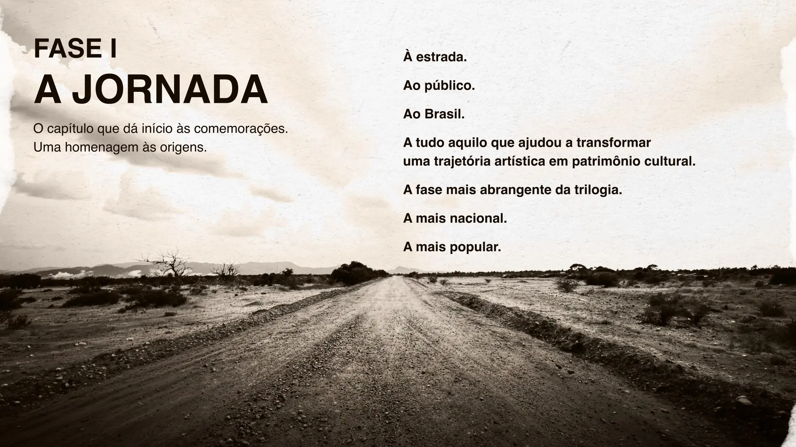
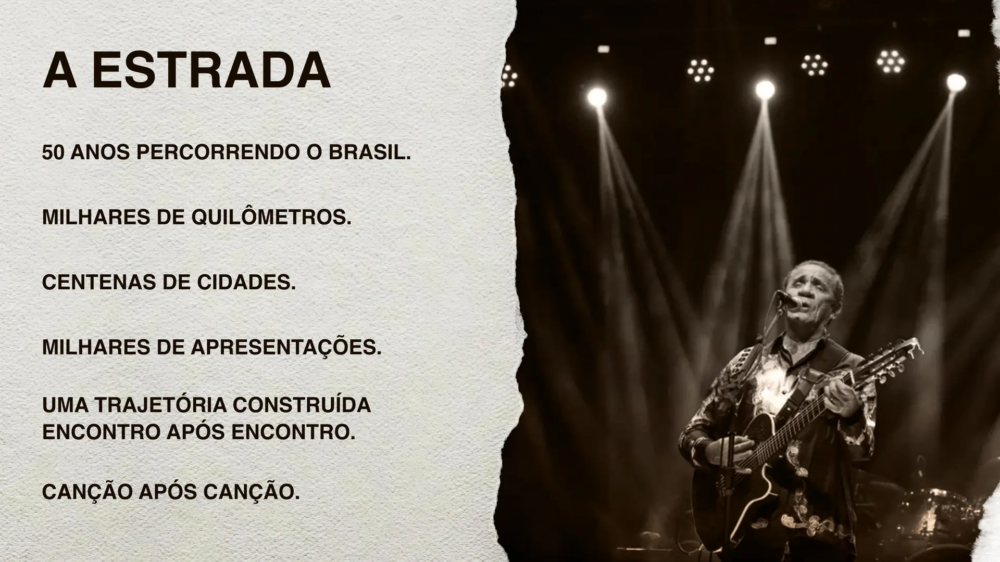
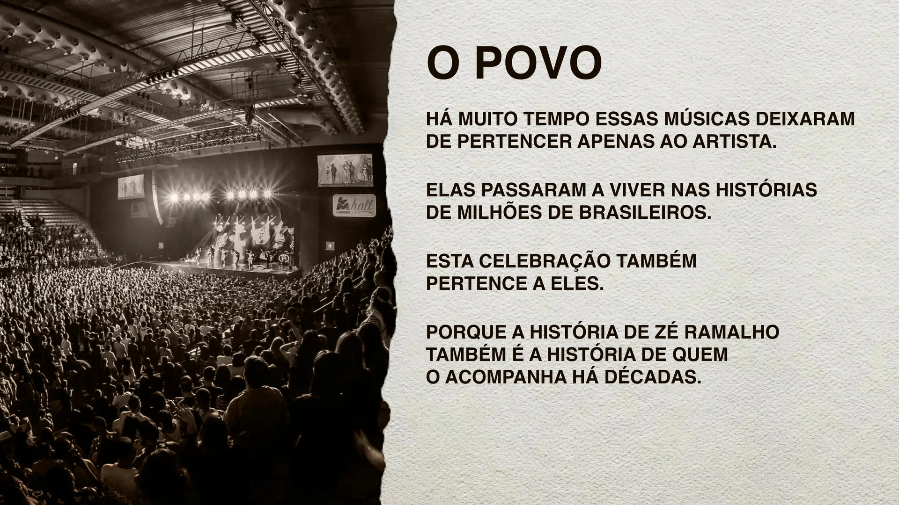
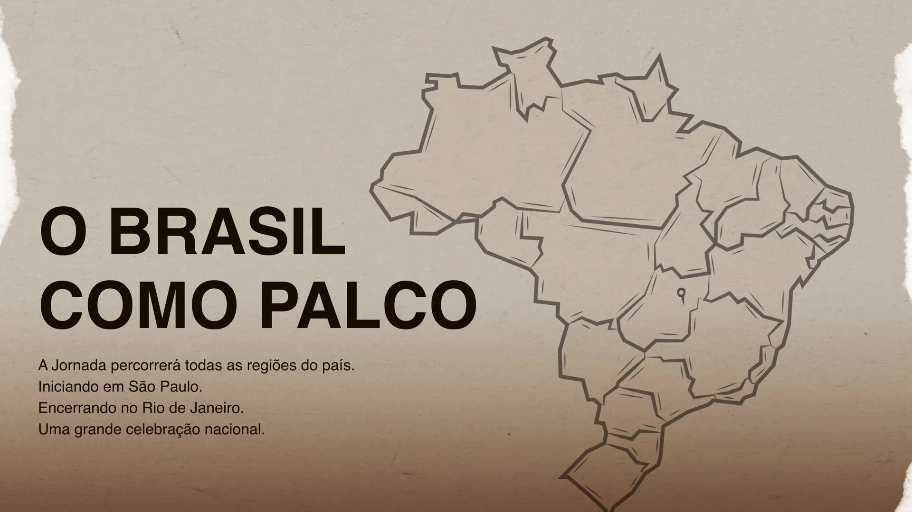

Trilogia
Zé Ramalho
50 anos
A primeira celebração de uma obra que atravessou o Brasil.
01
O marco
Existe apenas uma primeira vez.
Existe o primeiro disco. O primeiro grande sucesso. O primeiro palco que muda tudo.
E existe uma única chance de transformar cinquenta anos de carreira em um acontecimento nacional.
Uma oportunidade única. Irrepetível. Histórica.
Cinco décadas
Uma obra que atravessou o Brasil.
Ao longo de cinco décadas, Zé Ramalho construiu uma das trajetórias mais consistentes da música brasileira.
Uma obra que ultrapassou estilos, atravessou regiões, conectou gerações e se transformou em parte da memória afetiva do país.
Dimensão
Não é volume. É permanência.
O momento é agora
Não existe outro aniversário de 50 anos.
Não existe outra oportunidade de reunir público, imprensa, parceiros e mercado em torno de um marco dessa dimensão.
Mais do que uma turnê. Uma oportunidade histórica.
À altura da história
Celebrar. Mobilizar. Registrar.
Celebrar
Uma das maiores trajetórias da música brasileira.
Mobilizar
Milhões de pessoas que acompanharam essa história.
Registrar
Esse legado para as próximas gerações.
Trilogia dos 50 anos
Uma história grande demais para caber em uma única turnê.
Três capítulos. Uma única história.
A Jornada
As origens, a estrada, o povo. O capítulo mais amplo, mais nacional, mais popular.
Os Encontros
A obra em diálogo: artistas, vozes, palcos, gerações e encontros que ampliam seu alcance.
A Permanência
O legado registrado para quem viveu essa história e para quem ainda vai descobri-la.

Fase I
A Jornada
O capítulo que dá início às comemorações. Uma homenagem às origens, à estrada, ao público, ao Brasil.
A tudo aquilo que ajudou a transformar uma trajetória artística em patrimônio cultural.
A fase mais abrangente da trilogia. A mais nacional. A mais popular.
Os pilares da jornada
Três territórios explicam sua força e permanência.
01
As origens
O sertão. A poesia. A espiritualidade. A imaginação. Referências que ajudaram a construir uma das vozes mais singulares da música brasileira.

02
A estrada
Cinquenta anos percorrendo o Brasil. Uma trajetória construída encontro após encontro, cidade após cidade, canção após canção.

03
O povo
Há muito tempo, essas músicas deixaram de pertencer apenas ao artista. Elas passaram a viver nas histórias de milhões de brasileiros.
O Brasil como palco
Uma jornada nacional construída para percorrer o país inteiro.
Todas as regiões. Mais de um ano de celebração. Projetos de mídia, participações especiais e registro histórico.
Iniciando em São Paulo. Encerrando no Rio de Janeiro.
Uma grande celebração nacional.

Zé Ramalho 50 Anos
Não uma turnê comemorativa.
A maior celebração já concebida para uma obra que segue viva, cantada e reconhecida em todo o Brasil.
Uma história viva.
Uma celebração nacional.